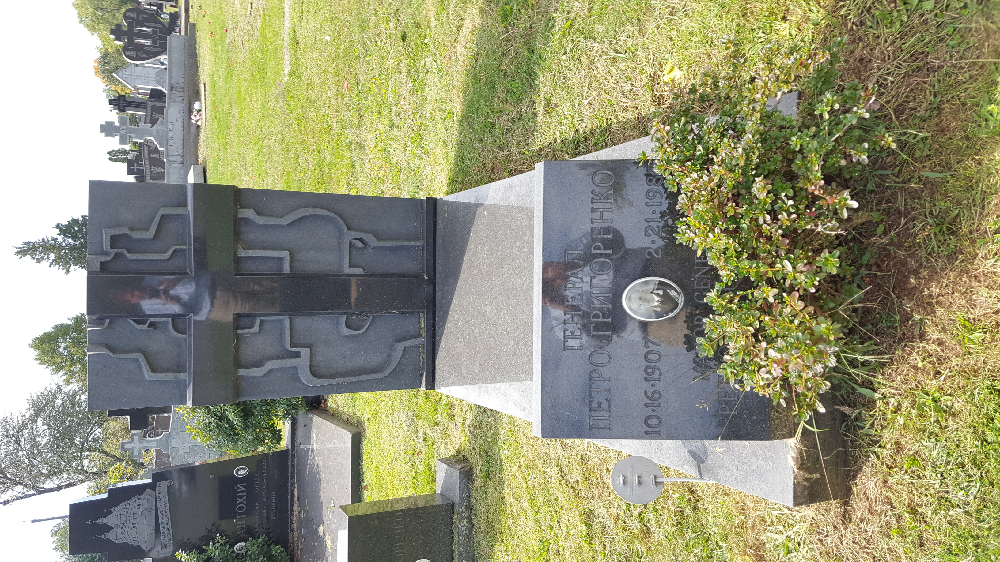
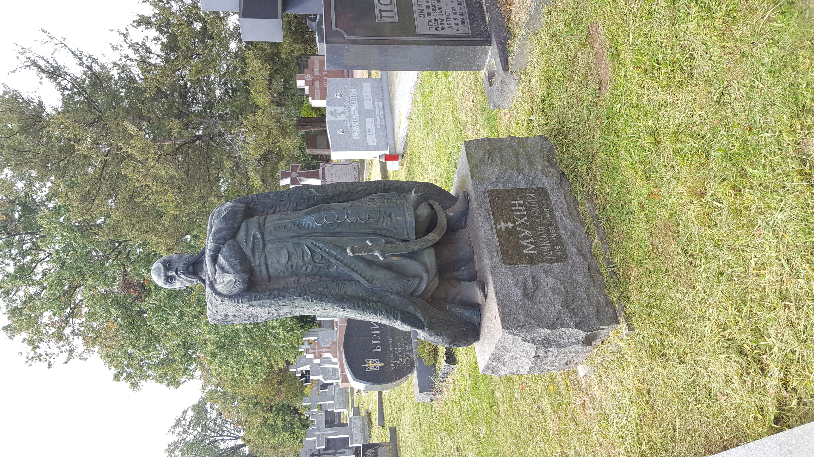

There are hundreds of famous, notable, or interesting people buried at this cemetery, and a similar number of fascinating gravestones and monuments. This tour highlights only a tiny handful of them. We encourage you to explore the other parts of the cemetery on your own at your leisure.
Front Row
The tour begins with the first row of gravestones directly in front of the parking lot. Almost everybody buried in these first few rows is famous or notable in some respect. Here we highlight only a few.
Petro Grigorenko
was a Major General in the Soviet Army who in the 1960s became a dissident and one of the founders of the human rights movement in the Soviet Union. He was subjected to “putative psychiatry” and finally forced into exile in the United States in 1977.

Hryhory Kytasty
was a player and teacher of the bandura, a traditional Ukrainian stringed instrument. Also a composer and conductor, he led the Ukrainian Bandurist Chorus based out of Detroit. He was instrumental in establishing summer camps at which many hundreds children and adults of all ages continue to learn the bandura.

Vasyl’ Barka
was a poet, writer, literary critic, and translator. After settling in the United States in 1950, he worked for Radio Liberty fora time, and sometimes did menial labor to support himself. In addition to original poetry and novels in prose and verse, he translated King Lear and the Divine Comedy into Ukrainian.
Borys Martos
was a politician, educator, and economist. During the period of the Ukrainian Revolution, he served as the chairman of the Council of People’s Ministers of the Ukrainian People’s Republic from April to August of 1919.
Petro Kholodnyi
was a noted neo-Byzantine artist, iconographer, and printmaker. He did the iconography in many important Ukrainian Orthodox and Catholic churches, including in St. Andrew Memorial Church right behind you.
Mykola Livyts’kyi and his father Andrii Livyts’kyi
were active in Ukrainian diaspora political life. Andrii served as a diplomat for the Ukrainian People’s Republic and was its first President in Exile. Mykola was a political activist and journalist who served in his father’s former position as President from 1967 to 1989.
Mausoleum
If you wish, you can now proceed to the Holy Resurrection Mausoleum in the lower level of St. Andew Memorial Church.
There you can view a short video about the cemetery and view the crypt of His Holiness Patriarch Mstyslav I and an associated exhibition. Patriarch Mstyslav was the prime driving force behind the purchase of this property on the Somerset/South Bound Brook border, the creation of St. Andrew Cemetery, and the construction of St. Andrew Memorial Church.
Metropolitan John
Proceed to the large black granite cross in the first row immediately to the right of the main road. This is the grave of Metropolitan John (Teodorovych), the first Ukrainian bishop of the Ukrainian Orthodox Church of the USA. All of his fellow bishops and clergy that he left behind in Soviet Ukraine in 1924 were killed by Stalin regime.
From here, proceed to the Fisher Family Graveyard, which is the fenced-in area on your right. More details about the Fisher Graveyard will be available there.
Artists and Poets
In the area near the Fisher Family Graveyard are the graves of a number of noted artists, poets, and musicians.
Immediately next to the back corner of the Fisher Family Graveyard fence is the grave of the composer Mykola Fomenko.
Two rows behind him is the noted “New York School” Ukrainian poet Ievhen Malaniuk. His monument is unusually low and features a cast of his death mask.

Behind him is one of the more extravagant monuments in the entire cemetery. It marks the grave of the Ukrainian American sculptor Mykola Mukhin, who arrived in the United States in 1949 as a post-War refugee and established a studio in Philadelphia. We are not sure if this massive sculpture of a Cossak is his own work, but we would not be surprised if it was.

As you make your way from Mukhin’s grave back to the main paved road, the last monument you will encounter marks the grave of the architect and architecture professor Volodymyr Sichyns’kyi.

Military Memorials
Make your way down the main paved road away from St. Andrew Memorial Church towards the large cross.
This cross was dedicated in 1971 to the memory of all who fought for the independence of Ukraine throughout the 20th century. In addition, there is a large black granite memorial in front of St. Andrew Memorial Church that you likely saw as you were driving in which is dedicated to all Ukrainian Americans who were members of the United States armed forces.
Throughout the cemetery, you will see gravestones with a cross and sword like these:
These denote the graves of veterans of the Ukrainian War of Independence (1918-1921).
Continuing down the main road, you will eventually find on your left a special section dedicated to veterans of the Ukrainian Insurgent Army. This guerrilla unit fought against both the Nazis and the Soviets in the World War II period.
Conclusion
Make your way along the chained-off area of the Ukrainian Insurgent Army area toward the grassy path that runs parallel to the main road, and proceed back towards St. Andrew Memorial Church.
Four rows before you get to the paved crossroad you will find the grave of Myroslav Chapovsky, a professor of forestry and soil science.
Appropriately, his monument is sculpted to look like it was made from two crossed wooden logs.
From here, you can proceed back towards the parking lot, or go exploring on your own. Don’t worry about getting lost, as the spire of St. Andrew Memorial Church is visible from almost everywhere in the cemetery.